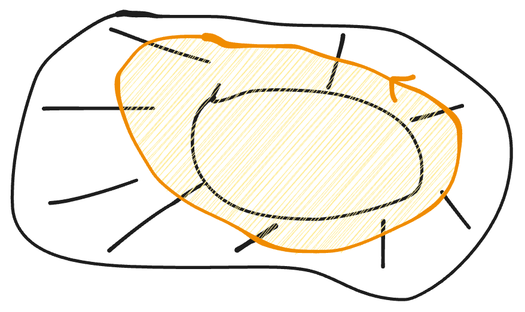

柯西積分公式
複變最重要的兩個定理！
Theo :
(Cauchy's integral formula) Let \(D\) be a bounded domain in \(\mathbb{C}\) with piecewise smooth
doundary. Suppose \(f\in
C^1(\bar{D})\), Then \[
f(w)=\frac{1}{2\pi i}\oint_{\partial
D}\frac{f(z)}{z-w}dw-\frac{1}{\pi}\iint_D
\frac{\displaystyle{\frac{\partial f}{\partial
\bar{z}}}(z)}{z-w}dxdy,\quad \forall w\in D
\]
where \(z=x+iy\).
consider \(D_{\varepsilon}=D/\bar{B_{\varepsilon}}\), \(B_{\epsilon}=B(w;\epsilon)\)
挖掉圓盤后有內外两個邊界，曲線積分等于外圍的減內圍的
\[ \begin{aligned} \oint_{\partial D_{\epsilon}}\frac{f(z)}{z-w}dz&=2i\iint_{D_{\epsilon}}\frac{\partial}{\partial \bar{z}}\left(\frac{f(z)}{z-w}\right)dxdy \\ &=2i\iint_{D_{\epsilon}}\frac{\frac{\partial f}{\partial \bar{z}}(z)}{z-w}dxdy \quad \star \end{aligned} \]
\[ \oint_{\partial D_{\epsilon}}\frac{f(z)}{z-w}dz=\oint_{\partial D}\frac{f(z)}{z-w}dz-\oint_{\partial B_{\epsilon}}\frac{f(z)}{z-w}dz \quad \star \]
set \(z=w+\epsilon e^{i\theta}\), \(z-w=\epsilon e^{i\theta}\)
\[ \begin{aligned} \oint_{\partial B_{\epsilon}}\frac{f(z)}{z-w}dz&=\oint_{\partial B_{\epsilon}}\frac{f(w+\epsilon e^{i\theta})}{\epsilon e^{i\theta}}dz\\ &=\int_0^{2\pi} \frac{f(w+\epsilon e^{i\theta})}{\epsilon e^{i\theta}}i\epsilon e^{i\theta}d\theta\\ &=i\int_0^{2\pi}f(w+\epsilon e^{i\theta})d\theta\\ &\xrightarrow{\epsilon\rightarrow0} i\int_0^{2\pi}f(w)d\theta\\ &=2\pi if(w) \end{aligned} \]
下面考慮這個積分
\[ 2i\iint_{D_{\epsilon}}\frac{\frac{\partial f}{\partial \bar{z}}(z)}{z-w}dxdy \]
因为\(f\)是\(C^1\)函数，\(\frac{\partial f}{\partial \bar{z}}(z)\in C(\bar{D})\)
\[ \iint_K \bigg| \frac{1}{z-w} \bigg| dxdy<\infty \]
K: compact
因為會收斂(用極座標)
\[ \iint_B\frac{1}{|z|}dxdy=\int_{0}^{2\pi}\int_0^R\frac 1r rdrd\theta \]
let \(\epsilon\rightarrow 0\)
\[ 2i\iint_{D_{\epsilon}}\frac{\frac{\partial f}{\partial \bar{z}}(z)}{z-w}dxdy\rightarrow 2i\iint_{D}\frac{\frac{\partial f}{\partial \bar{z}}(z)}{z-w}dxdy \]
所以\(\epsilon\rightarrow 0\)時
\[ \oint_{\partial D}\frac{f(z)}{z-w}dz-2\pi if(w)=2i\iint_{D}\frac{\frac{\partial f}{\partial \bar{z}}(z)}{z-w}dxdy \]
\[ \therefore f(w)=\frac{1}{2\pi i}\oint_{\partial D}\frac{f(z)}{z-w}dw-\frac{1}{\pi}\iint_D \frac{\displaystyle{\frac{\partial f}{\partial \bar{z}}}(z)}{z-w}dxdy\quad \blacksquare \]
Theo Let \(D\subset \mathbb{C}\) be a simply-connected domain, suppose \(f\in C^1(D)\cap O(D)\). Then \[ f(w)=\frac{1}{2\pi i}\oint_{\partial D}\frac{f(z)}{z-w}dw\quad w\in \Omega \]
\(\Omega\): region surrounded by the simple closed curve \(C\)
simply connected 是為了保證\(C\)圍出來的還在\(D\)裡面，避免下面這種情況

Theo (Cauchy)
Let \(D\) be a simply connected domain in \(\mathbb{C}\),
\(C\): simple closed curve in \(D\)
If \(f\in O(D)\). Then
\[ \oint_C f(z)dz=0 \]
之前有\(C^1\)是為了訴諸於格林定理，但證明這個定理不能用格林，要用完全不同的想法
\(R\): rectangle
\(L\): length of \(\partial R\)
Claim: \(\oint_{\partial R}f(z)dz=0\)
反證法
Assume \(\exists R\) s.t. \[ \oint_{\partial R}f(z)dz=A\neq 0 \]
切割，對大长方形積一次，相當於對四個小长方形各積一次

\[ \oint_Rf(z)dz=\sum_{k=1}^4\oint_{R^{(k)}}f(z)dz \]
\[ \therefore \exists R_1=R^{(j)} \ \text{some }j, \quad s.t. \bigg|\oint_{\partial R_1}f(z)dz \bigg|\geq \frac{A}{4} \]
\[ \bigg|\oint_{\partial R_2}f(z)dz \bigg|\geq \frac{A}{4^2} \]
obtain a seq. of rectangle \(\{R_n\}\)
\[ \bigg|\oint_{\partial R_n}f(z)dz \bigg|\geq \frac{A}{4^n} \]
By Cantor intersection theorem \[ \exists P_0\in R_n, \ \forall n\quad P_0\in D \]
Write near \(P_0\)
\[ f(z)=f(P_0)+f'(P_0)(z-P_0)+\epsilon (z)(z-P_0) \]
\(\epsilon\rightarrow 0\) as \(z\rightarrow P_0\)
n 很大時，\(f(z)\)可以用\(f(P_0)+f'(P_0)(z-P_0)+\epsilon (z)(z-P_0)\)替換
\[ \oint_{\partial R_n}\left[f(P_0)+f'(P_0)(z-P_0)+\epsilon (z)(z-P_0)\right]dz \]
多項式一定是某個函數的微分， \[ \therefore f(P_0)+f'(P_0)(z-P_0)=Q'(z) \]
\(Q(z)\): polynomial of degree at most 2

\(z=\gamma(t)\)
\[ \begin{aligned} &\oint_{\partial R_n}[f(P_0)+f'(P_0)(z-P_0)]dz\\ =&\oint_{\partial R_n}Q'(z)dz\\ =&\int_a^bQ'(z)\gamma'(t)dt\\ =&\int_a^bd(Q(z))\\ =& Q(\gamma(b))-Q(\gamma(a))=0\quad \text{首尾相连} \end{aligned} \]
因為 \[ |\oint_{\partial R_n}dz|=|\int_a^b\gamma'(t)dt|\leq \int_a^b|\gamma'(t)|dt=Ln \] \((z-P_0)\)小于等于\(Ln\)（圓心到邊界的連線\(\leqslant\)周長），\(dz\)積分也小於\(Ln\)，所以兩次。\(\epsilon\)用最大值提出來 \[ \begin{aligned} &|\oint_{\partial R_n}\left[f(P_0)+f'(P_0)(z-P_0)+\epsilon (z)(z-P_0)\right]dz|\\ =&|\oint_{\partial R_n}\epsilon (z)(z-P_0)dz|\\ \leq &\max_{z\in \partial R_n}|\epsilon(z)|\cdot L_n^2 \end{aligned} \]
由于 \(\displaystyle{L_n=\frac{L}{2^n}}\)
\[ \max_{z\in \partial R_n}|\epsilon(z)|\cdot \left(\frac{L}{2^n}\right)^2\geq \frac{|A|}{4^n} \]
當\(n\rightarrow \infty\)時，\(\max_{z\in \partial R_n}|\epsilon(z)|\rightarrow 0\)
\[ \therefore \max_{z\in \partial R_n}|\epsilon(z)|\geq \frac{|A|}{L^2}\Rightarrow 0\geq \frac{|A|}{L^2}\quad \text{矛盾}. \]
目前證得在所有的長方形上 \[ \oint_{\partial R}f(z)dz=0 \ \square \]
這個函數\(F(z)\)必須well-defined：不管路徑怎麼選，積出來都一樣
要證明它well-defined
\[ \Leftrightarrow F(z)=\int_{\Gamma_1}f(z)dz=\int_{\Gamma_2}f(z)dz \]
因為每段路徑平行於\(x\)或\(y\)轴，可以視作長方形的一部分。借助剛才的準備工作，
\[ \int_{\Gamma_1-\Gamma_2}f(z)dz=\int_{\Gamma_1}f(z)dz-\int_{\Gamma_2}f(z)dz=0\quad \square \]
所以它是well-defined
Claim \[ F'(z)=f(z) \]

\[ \begin{aligned} \lim_{z\rightarrow w}\frac{F(z)-F(w)}{z-w}&=\lim_{z\rightarrow w}\frac{\int_{\Gamma+C}f(\eta)d\eta-\int_{\Gamma}f(\eta)d\eta}{z-w}\\ &=\lim_{z\rightarrow w}\frac{\int_Cf(\eta)d\eta}{z-w}\\ &=\lim_{z\rightarrow w}\frac{\int_Cf(w)d\eta+[\int_Cf(\eta)d\eta-\int_Cf(w)d\eta]}{z-w}\\ &=f(w)\quad \square \end{aligned} \]
\(f(w)\)是常數，\(\int_Cf(w)d\eta=f(w)(z-w)\)，後一項趨於0
\[ \begin{aligned} \oint_Cf(z)dz&=\oint_CF'(z)dz\\ &=\int_a^bF'(\gamma(t))\gamma'(t)dt\\ &=\int_a^b dF(\gamma(t))\\ &=F(\gamma(b))-F(\gamma(a))=0. \quad \blacksquare \end{aligned} \]
Theo(Cauchy's integral formula)
Let \(D\) be a simply-connected domain in \(\mathbb{C}\),
\(C\): simple closed curve
\(f\in O(D)\), let \(\Omega\) be the region surrounded by \(C\)
Then
\[ f(z)=\frac{1}{2\pi i}\int\frac{f(w)}{w-z}dw\quad w\in \Omega \]
區域內的點的函數值完完全全受邊界點函數值的影響，可以又邊界生成
卷积 convolution \[ f\rightarrow g(z)=\int f(w)g(z-w)dw \]
\(\displaystyle{\frac{1}{w-z}}\): Cauchy kernel (reproducing kernel)

\(\Omega/\bar{B_{\epsilon}}=\Omega_{\epsilon}\)
\[ \int_{\partial \Omega_{\epsilon}}\frac{f(w)}{w-z}dw=0 \]
上一個定理證得：解析函數在它的邊界積分等於0，因為\(w=z\)被挖掉了，而且\(\displaystyle \frac{1}{w-z}\)有極限，所以\(\displaystyle \frac{f(w)}{w-z}\)是解析函數
\[ \int_{\partial \Omega=C}\frac{f(w)}{w-z}dw-\int_{\partial B_{\epsilon}}\frac{f(w)}{w-z}dw=0 \]
因為\(\epsilon\rightarrow 0\)時， \[ \int_{\partial B_{\epsilon}}\frac{f(w)}{w-z}dw\rightarrow 2\pi if(z) \]
\[ \int_{C}\frac{f(w)}{w-z}dw=2\pi if(z)\Rightarrow f(z)=\frac{1}{2\pi i}\int_{C}\frac{f(w)}{w-z}dw \quad \blacksquare \]
(Theo) Let D be a domain in \(\mathbb{C}\), let \(f_n\in O(D), n\in \mathbb{N}\), If \(f_n\) uniformly converges on compact subsets (u.c.c.) of \(D\) to \(f\), then
\[ f\in O(D) \ 且\ f_n'\rightarrow f'\quad u.c.c.\ on \ D \]
在real上考慮\(\displaystyle f_n(x)=\frac{\sin nx}{\sqrt{n}}\)，\(f_n\rightarrow f\equiv 0\) uniformly on \(\mathbb{R}\). 但\(f_n'(x)=\sqrt{n}\cos nx\), \(f'_n(0)=\sqrt{n}\)，不收斂於\(f\equiv 0\)
複變的表現很不一樣
pf.
\(f\in C(D)\), choose \(\bar{B}(z_0;\delta)\subset D\), \(z\in B(z_0;\delta)\)

\[ f_n(z)=\frac{1}{2\pi i}\int_{\Gamma_{\delta}}\frac{f_n(w)}{w-z}dw \]
對等式兩邊求極限\(\displaystyle \lim_{n\rightarrow \infty}\)
\[ f(z)=\frac{1}{2\pi i}\int_{\Gamma_{\delta}}\frac{f(w)}{w-z}dw \]
求導
\[ f_n'(z)=\frac{1}{2\pi i}\int_{\Gamma_{\delta}}\frac{f_n(w)}{(w-z)^2}dw \]
\[ n\rightarrow\infty\quad \Downarrow \quad \text{uniformly on a smaller disc} \]
\[ f'(z)=\frac{1}{2\pi i}\int_{\Gamma_{\delta}}\frac{f(w)}{(w-z)^2}dw \]
相當於收斂函數從原來的\(f\)變成\(f/(w-z)\)